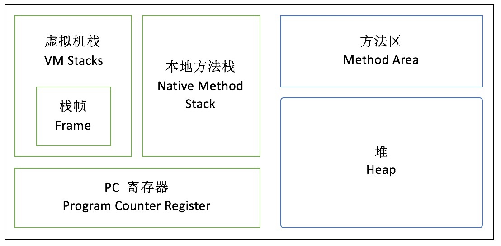
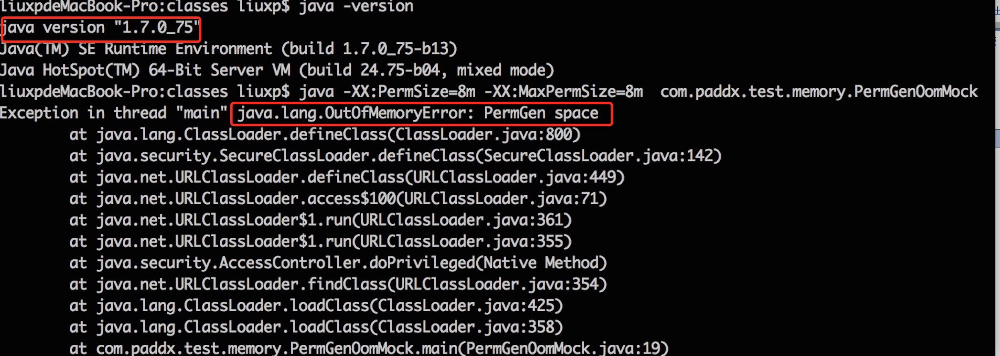

Java8内存模型—永久代(PermGen)和元空间(Metaspace)
介绍jvm内存模型、以及 JDK 8 中永久代向元空间转变
通过程序展示OutOfMemoryError与StackOverflowError
JVM 内存模型

虚拟机栈
每个线程有一个私有的栈，随着线程的创建而创建。栈里面存着的是一种叫“栈帧”的东西，每个方法会创建一个栈帧，栈帧中存放了局部变量表（基本数据类型和对象引用）、操作数栈、方法出口等信息。栈的大小可以固定也可以动态扩展。
1. 当申请不到空间时，会抛出 OutOfMemoryError。这里有一个小细节需要注意，catch 捕获的是 Throwable，而不是 Exception。因为 StackOverflowError 和 OutOfMemoryError 都不属于 Exception 的子类。
2. 当栈调用深度大于JVM所允许的范围，会抛出 StackOverflowError 的错误，不过这个深度范围不是一个恒定的值，我们通过下面这段程序可以测试一下这个结果：
栈溢出测试源码：package com.paddx.test.memory; public class StackErrorMock { private static int index = 1; public void call(){ index++; call(); } public static void main(String[] args) { StackErrorMock mock = new StackErrorMock(); try { mock.call(); }catch (Throwable e){ System.out.println("Stack deep : "+index); e.printStackTrace(); } } }输出
至于红色框里的值是怎么出来的，就需要深入到 JVM 的源码中才能探讨，这里不作详细阐述。本地方法栈
这部分主要与虚拟机用到的 Native 方法相关，一般情况下， Java 应用程序员并不需要关心这部分的内容。
PC 寄存器(程序计数器)
PC 寄存器，也叫程序计数器。JVM支持多个线程同时运行，每个线程都有自己的程序计数器。倘若当前执行的是 JVM 的方法，则该寄存器中保存当前执行指令的地址；倘若执行的是native 方法，则PC寄存器中为空。
堆
堆内存是 JVM 所有线程共享的部分，在虚拟机启动的时候就已经创建。
所有的对象和数组都在堆上进行分配。这部分空间可通过 GC 进行回收。
当申请不到空间时会抛出 OutOfMemoryError。下面我们简单的模拟一个堆内存溢出的情况：package com.paddx.test.memory; import java.util.ArrayList; import java.util.List; public class HeapOomMock { public static void main(String[] args) { List<byte[]> list = new ArrayList<byte[]>(); int i = 0; boolean flag = true; while (flag){ try { i++; list.add(new byte[1024 * 1024]);//每次增加一个1M大小的数组对象 }catch (Throwable e){ e.printStackTrace(); flag = false; System.out.println("count="+i);//记录运行的次数 } } } }输出结果
注意，这里我指定了堆内存的大小为16M，所以这个地方显示的count=14（这个数字不是固定的），至于为什么会是14或其他数字，需要根据 GC 日志来判断，具体原因会在下篇文章中给大家解释。方法区：
方法区也是所有线程共享。主要用于存储类的信息、常量池、方法数据、方法代码等。方法区逻辑上属于堆的一部分，但是为了与堆进行区分，通常又叫“非堆”。 关于 方法区（PermGen） 内存溢出的问题会在下面中详细探讨。
PermGen（永久代）
绝大部分 Java 程序员应该都见过 "java.lang.OutOfMemoryError: PermGen space "这个异常。
这里的 “PermGen space”其实指的就是方法区
不过方法区和“PermGen space”又有着本质的区别。
方法区是 JVM 的规范，而 PermGen space 则是 JVM 规范的一种实现
并且只有 HotSpot 才有 “PermGen space”，而对于其他类型的虚拟机，如JRockit（Oracle）、J9（IBM） 并没有“PermGen space”。
由于方法区主要存储类的相关信息，所以对于动态生成类的情况比较容易出现永久代的内存溢出。
最典型的场景就是，在 jsp 页面比较多的情况，容易出现永久代内存溢出。我们现在通过动态生成类来模拟 “PermGen space”的内存溢出：
package com.paddx.test.memory;
public class Test {
}
package com.paddx.test.memory;
import java.io.File;
import java.net.URL;
import java.net.URLClassLoader;
import java.util.ArrayList;
import java.util.List;
public class PermGenOomMock{
public static void main(String[] args) {
URL url = null;
List<ClassLoader> classLoaderList = new ArrayList<ClassLoader>();
try {
url = new File("/tmp").toURI().toURL();
URL[] urls = {url};
while (true){
ClassLoader loader = new URLClassLoader(urls);
classLoaderList.add(loader);
loader.loadClass("com.paddx.test.memory.Test");
}
} catch (Exception e) {
e.printStackTrace();
}
}
}
输出结果

本例中使用的 JDK 版本是 1.7，指定的 PermGen 区的大小为 8M。通过每次生成不同URLClassLoader对象来加载Test类，从而生成不同的类对象，这样就能看到我们熟悉的 "java.lang.OutOfMemoryError: PermGen space " 异常了。这里之所以采用 JDK 1.7，是因为在 JDK 1.8 中， HotSpot 已经没有 “PermGen space”这个区间了，取而代之是一个叫做 Metaspace（元空间） 的东西。下面我们就来看看 Metaspace 与 PermGen space 的区别。
Metaspace（元空间）
其实，移除永久代的工作从JDK1.7就开始了。
JDK1.7中，存储在永久代的部分数据就已经转移到了Java Heap或者是 Native Heap。但永久代仍存在于JDK1.7中，并没完全移除，
譬如符号引用(Symbols)转移到了native heap；字面量(interned strings)转移到了java heap；类的静态变量(class statics)转移到了java heap。
我们可以通过一段程序来比较 JDK 1.6 与 JDK 1.7及 JDK 1.8 的区别，以字符串常量为例：
package com.paddx.test.memory;
import java.util.ArrayList;
import java.util.List;
public class StringOomMock {
static String base = "string";
public static void main(String[] args) {
List<String> list = new ArrayList<String>();
for (int i=0;i< Integer.MAX_VALUE;i++){
String str = base + base;
base = str;
list.add(str.intern());
}
}
}
这段程序以2的指数级不断的生成新的字符串，这样可以比较快速的消耗内存。我们通过 JDK 1.6、JDK 1.7 和 JDK 1.8 分别运行：
JDK 1.6 的运行结果：
JDK 1.7的运行结果：
JDK 1.8的运行结果：
从上述结果可以看出，JDK 1.6下，会出现“PermGen Space”的内存溢出，而在 JDK 1.7和 JDK 1.8 中，会出现堆内存溢出，并且 JDK 1.8中 PermSize 和 MaxPermGen 已经无效。因此，可以大致验证 JDK 1.7 和 1.8 将字符串常量由永久代转移到堆中，并且 JDK 1.8 中已经不存在永久代的结论。现在我们看看元空间到底是一个什么东西？元空间的本质和永久代类似，都是对JVM规范中方法区的实现。不过元空间与永久代之间最大的区别在于：元空间并不在虚拟机中，而是使用本地内存。因此，默认情况下，元空间的大小仅受本地内存限制，但可以通过以下参数来指定元空间的大小：
- -XX:MetaspaceSize，初始空间大小，达到该值就会触发垃圾收集进行类型卸载，同时GC会对该值进行调整：如果释放了大量的空间，就适当降低该值；如果释放了很少的空间，那么在不超过MaxMetaspaceSize时，适当提高该值。
- -XX:MaxMetaspaceSize，最大空间，默认是没有限制的。
除了上面两个指定大小的选项以外，还有两个与 GC 相关的属性：
- -XX:MinMetaspaceFreeRatio，在GC之后，最小的Metaspace剩余空间容量的百分比，减少为分配空间所导致的垃圾收集
- -XX:MaxMetaspaceFreeRatio，在GC之后，最大的Metaspace剩余空间容量的百分比，减少为释放空间所导致的垃圾收集
现在我们在 JDK 8下重新运行一下代码段 4，不过这次不再指定 PermSize 和 MaxPermSize。而是指定 MetaSpaceSize 和 MaxMetaSpaceSize的大小。输出结果如下：
从输出结果，我们可以看出，这次不再出现永久代溢出，而是出现了元空间的溢出。

总结
通过上面分析，大家应该大致了解了 JVM 的内存划分，也清楚了 JDK 8 中永久代向元空间的转换。
不过大家应该都有一个疑问，就是为什么要做这个转换？所以，最后给大家总结以下几点原因：
- 字符串存在永久代中，容易出现性能问题和内存溢出。
- 类及方法的信息等比较难确定其大小，因此对于永久代的大小指定比较困难，太小容易出现永久代溢出，太大则容易导致老年代溢出。
- 永久代会为 GC 带来不必要的复杂度，并且回收效率偏低。
- Oracle 可能会将HotSpot 与 JRockit 合二为一。